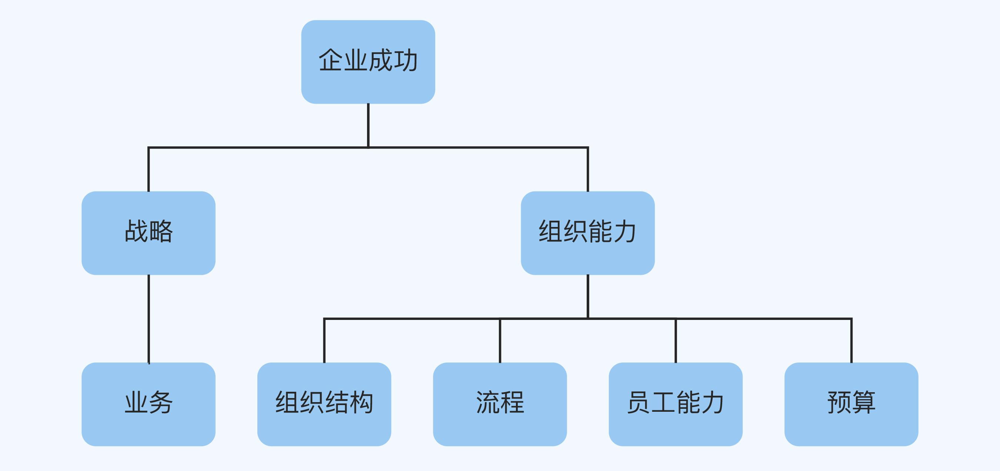

- 00 开篇词 为什么每个人都应该学会复盘？.md.html
- 01 CLAP模型：一个优秀的复盘模型是什么样的？.md.html
- 02 OPTM框架：怎么使用CLAP模型？.md.html
- 03 教练技术：怎么做复盘才能化解冲突？.md.html
- 04 制度和文化：怎么营造复盘环境？.md.html
- 05 三角法：怎么组建复盘团队？.md.html
- 06 MECE原则：怎么准备复盘资料？.md.html
- 07 五步法：如何召开一次高效的复盘会议？.md.html
- 08 事实比较：如何快速比较目标与结果？.md.html
- 09 分析原因：梳理逻辑时怎样找到切入点？.md.html
- 10 洞察规律：怎样更新认知才能找准发力点？.md.html
- 11 OKR：怎样根据复盘结论制定计划？.md.html
- 12 Double Check：怎么检查评估一次复盘的效果？.md.html
- 13 案例导学：我是怎么帮助企业做复盘的？.md.html
- 14 战略升级：5年增长100倍的跨境电商做对了什么？.md.html
- 15 业务关键点：改进一个点业绩增长50%？.md.html
- 16 组织结构设计：变动一个职位，就能带来100万_月的增量吗？.md.html
- 17 高效赋能：怎么建立流程才能把人效提升3倍？.md.html
- 18 人才培养：怎么把人才转化成实际生产力？.md.html
- 19 预算制定：人头和财务预算到底怎么定？.md.html
- 春节荐书（一）《原则》：在不确定中找到确定.md.html
- 春节荐书（二）《人类简史》：故事的力量.md.html
- 结束语 复盘，见天地见众生见自己.md.html
- 捐赠
13 案例导学：我是怎么帮助企业做复盘的？
你好，我是张鹏。
在前面的课程中，我们学习了复盘的基本方法和实操流程。从今天开始，我们进入到这门课程的第三部分，实战案例篇。
我会从六个典型的、能创造巨大商业价值的实战场景出发，为你详细解读最近3年我亲自操盘的真实案例。这些案例可以为你提供解决各类问题的参考模板，同时我也会通过它们帮助你进一步掌握我的复盘心法。
在正式讲解之前，我想先为你做一期学习指导，让你能更好地理解这些案例的内在逻辑。
工作流程
作为一名商业顾问，我的客户是企业，说得更明确一点，就是企业主。他们都是在意识到企业运营过程中已经出现问题或者即将出现问题的时候才来找我，所以在某种意义上，我的角色就相当于是企业的医生。
那么企业主一般会找我解决什么问题呢？我举几个最常见的例子吧：
- 业务增长速度太慢。
- 企业发展太快，人才跟不上。
- 现金流断裂。
- 想要转型，但又没有把握，担心失败。
- 明明产品或者业务有亮点，业绩表现却总是不好。
……
如果用医学思维来打比方，这些问题只是表面的症状，而不是深层的病因。如果把企业所有的问题都简单地归结为经营不善（就像病人说“我不舒服”），那么商业顾问的工作就没有价值了。
同样是发烧咳嗽，既有可能是普通感冒，也有可能是新冠肺炎。如果只是“头痛医头、脚痛医脚”，不但解决不了问题，反而会错过解决问题的黄金时期。
面对这些问题的时候，我会学习医生看病的思路，先检查，再根据情况诊断病因，开出药方，最后给出服药指导以及平时的注意事项。
所以，我的工作流程可以分为5个步骤：需求理解、业务调研、企业诊断、方案评估和实施执行，如下图所示：
为了方便你学习理解，实战案例篇每一讲的结构安排如下：
- 案例背景：开头简要介绍需求理解和业务调研的内容。
- 复盘详解：主体部分详细讲解企业诊断和方案评估的内容，这一部分是由我指导企业高管和他们的复盘团队共同完成的。
- 最终结果：结尾补充说明实施执行的内容，下一步的行动计划由企业自己完成，我会跟进了解最后的完成情况。
成功公式
在刚才提到的5个步骤中，含金量最高的就是企业诊断了。我是怎么做诊断的呢？
华人管理大师杨国安教授曾经总结过一个企业成功公式：
企业成功 = 战略 × 组织能力
我根据这个公式的思路，对企业经常遇到的问题进行整理分类，画出了逻辑树：

先来看战略部分。
- 战略是指企业打算要干什么，方向、安排和规划都是什么样的。
- 业务是指具体怎么干，研发、生产、运营和营销会怎么安排。
再来看组织能力部分。
- 组织能力是指团队能不能把计划执行好，达成战略目标，确定的事情能不能高效完成，不确定的事情有没有规避风险的办法。
- 组织结构是指组织能力的框架。就像排兵布阵一样，组织结构如果出现遗漏和错搭，就会导致木桶的短板效应。
- 流程是指能够优化现有资源配比的工具。尤其是对确定性的业务来说，流程能够极大地提升效率。
- 员工能力是指个人能力。就算其他所有的条件都相同，员工个人能力不同，结果也会不一样。
- 预算是指财务收支计划。它经常被人提起，又经常被人忽视。很多拿着投资人的钱，或者有预收款业务的公司，反而比那些精打细算的小商人在商业上阵亡率更高，就是因为预算没有控制好。
而我诊断的办法是，先看企业的战略还是组织模块和他们的大目标（有时候是愿景或者战略目标）是否对齐（全面体检）；如果发现有问题，再沿着分支往下找，并且和企业显示的问题进行对应（专项深度检查）；当找出问题根源的时候，再看怎么调整最有效。
当然，这6个场景并不全面，还有一些问题并没有覆盖到。比如产品设计本身的问题，毕竟每家企业的主营产品完全不同，这种问题只能由业务团队自己搞定；再比如企业文化问题，这不是三五个月就能改变的。
所以需要声明一点，实战案例篇的案例主要是针对我在个人商业实践中经常遇到的、具有普遍性的、能够在短期（一个季度内）内解决的问题。
另外，由于这些都是真实的商业案例，有一部分具体数据需要保密，不能展示出来，所以请你把关注点放在复盘思路上，这也是这门课程最有价值的部分。
好了，导学就到这里，我们下一讲见。
© 2019 - 2023 Liangliang Lee. Powered by gin and hexo-theme-book.